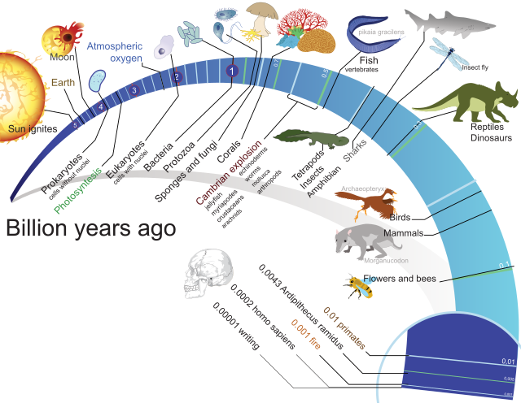
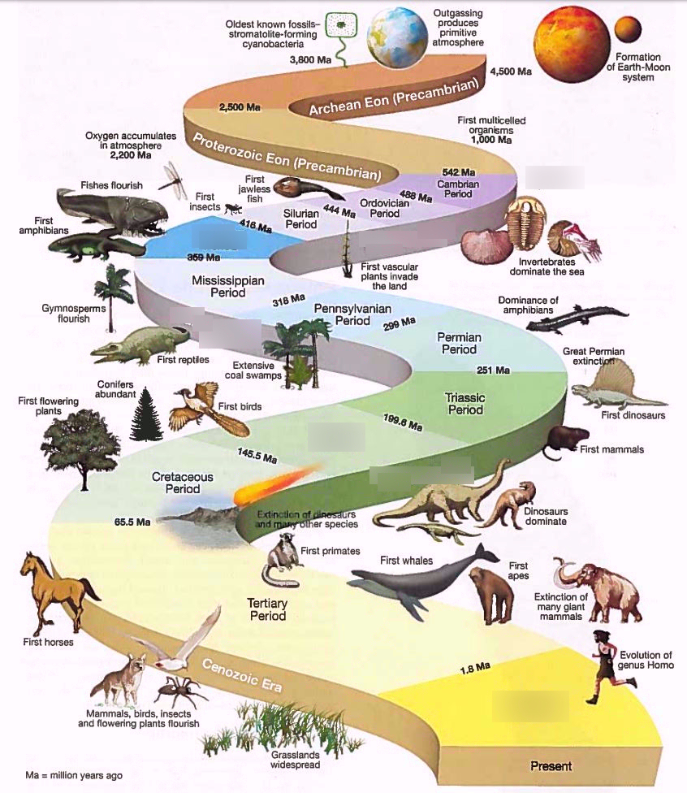
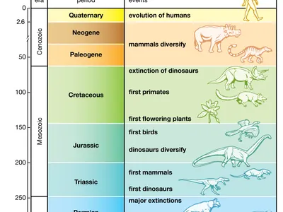
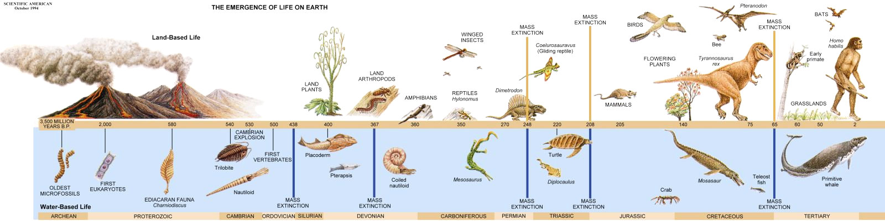

A Brief History Of Animals
The evolution of animals began over 600 million years ago during the Precambrian period, with the appearance of simple multicellular organisms in the oceans. The earliest animals were soft-bodied, microscopic, and likely resembled sponges or simple cnidarians (like jellyfish). These organisms lacked complex organs but were capable of basic movement and feeding. This era set the stage for the dramatic diversification that followed, as multicellularity allowed specialized cells and tissues to evolve.

During the Cambrian Explosion around 540 million years ago, there was an unprecedented diversification of life forms. Most of the major animal phyla appeared in a relatively short period, including early arthropods, mollusks, and chordates. This period marks the emergence of hard body parts like shells and exoskeletons, which not only protected animals but also left a rich fossil record. Predation pressures, environmental changes, and ecological interactions drove rapid adaptations, leading to more complex body plans and organ systems.

In the Ordovician to Devonian periods (roughly 485–360 million years ago), animals continued to diversify in both oceans and freshwater habitats. Early vertebrates, such as jawless fish, evolved, eventually giving rise to jawed fish and the first tetrapods. Around this time, animals began experimenting with life on land. Amphibians evolved from lobe-finned fish, developing lungs and limbs capable of supporting their weight outside water. This transition marked a crucial step in the evolution of terrestrial ecosystems.

The Carboniferous and Permian periods saw further adaptation to terrestrial life, including the evolution of reptiles capable of laying eggs on land, which allowed animals to colonize drier environments. In the following Mesozoic era, reptiles dominated the land, and the first mammals and birds appeared. The extinction of many reptilian groups at the end of the Cretaceous period opened ecological niches, allowing mammals and birds to diversify and occupy a wide range of habitats.

In the Cenozoic era, which continues today, mammals became the dominant terrestrial animals, evolving into the diverse forms we see now, from whales to primates. Primates, including humans, evolved roughly 6–7 million years ago, with adaptations for upright walking, larger brains, and complex social behavior. Modern animals are the result of billions of years of evolution, shaped by natural selection, genetic variation, environmental changes, and mass extinction events, which together produced the remarkable diversity of life on Earth.